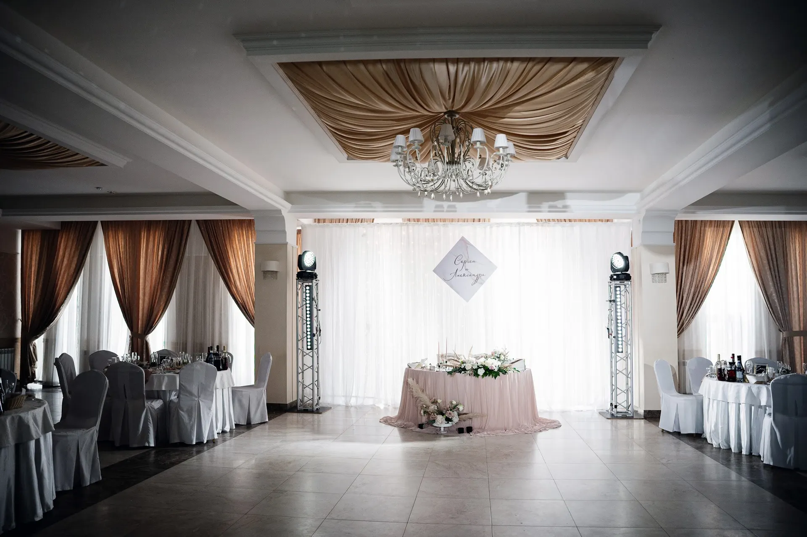
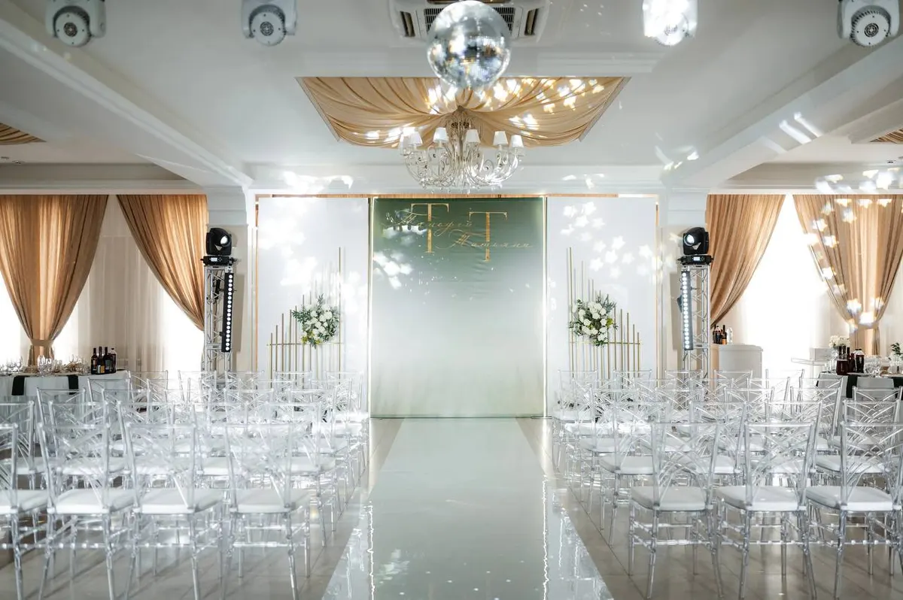
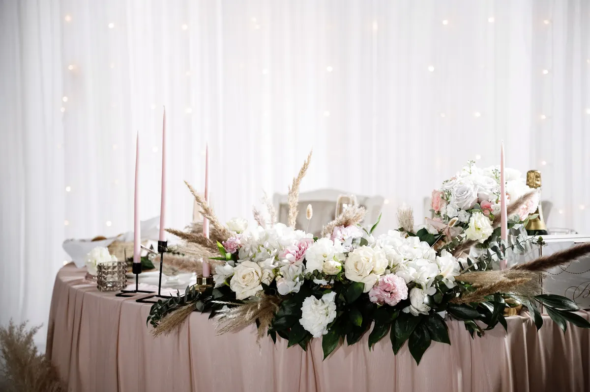
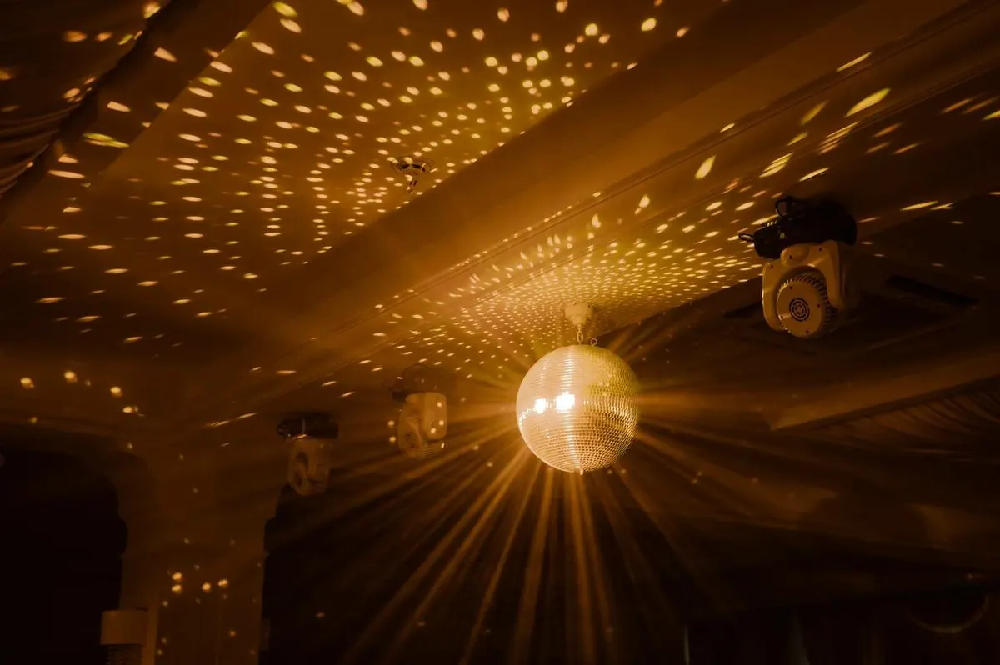

Банкетный зал · Томск
Банкетный зал «Да Винчи» в Томске: заявка на дату свадьбы, выпускного или корпоратива
Выберите формат, день и время - чат откроется с готовым текстом. Свадьбы, выпускные, корпоративы и семинары в двух просторных залах с большим холлом.
- Рейтинг 4,8, 358 оценок
- Два зала на втором этаже, по отзывам
- Свадебный фуршет и выездная церемония, по карточке

Что есть в «Да Винчи»
Входит
- Два банкетных зала рядом, по отзыву клиента
- Большой холл с диванами и зеркалами, по отзыву
- Сцена и круглые столы, по отзыву
- Свадебный фуршет, по карточке
- Каскад шампанского, по карточке
Отдельно, если нужно
- Выездная церемония брака, по карточке
- Европейская и русская кухня, по карточке
- Аппаратура для мероприятий, по отзыву клиентки
- Оплата: предоплата, наличные, перевод
- Удобное расположение в городе, по отзывам
Форматы мероприятий
На карточке на Яндекс.Картах нет меню и прайса, поэтому цены стоят «уточнить». Здесь удобно показать пакеты и меню до звонка.
Мероприятия
- Свадьбапо карточке и отзывам клиентовуточнить
- Выездная церемонияпо карточкеуточнить
- Выпускнойклиенты проводили выпускныеуточнить
- Корпоративклиенты проводили новогодние корпоративыуточнить
- Семинар или конференцияклиентка проводила семинар для клиентов компанииуточнить
Перечень составлен по карточке и отзывам, прайса на карточке нет. Меню, аренду и условия уточняйте у администратора.
Как оставить заявку
- 01
Выберите формат, день и время
В блоке заявки вверху страницы.
- 02
Нажмите «Оставить заявку»
Откроется чат с готовым сообщением - останется его отправить.
- 03
Дождитесь ответа администратора
Он уточнит число гостей и повод и подтвердит дату.



Что говорят клиенты
Просторные залы
Гости пишут про просторные залы, которые можно поделить на зоны.
Вкусная кухня
Клиенты хвалят еду и красивую подачу.
Внимательный персонал
Гости благодарят официантов и администратора.
Чистота и интерьер
Клиенты отмечают красивый интерьер, чистоту и порядок.
Отзывы с Яндекс.Карт
«Отмечали свадьбу в этом заведении. Все понравилось. Красивое оформление фойе, зала. Еда вкусная, оформлено красиво, персонал внимательный, ответственный. Спасибо!»
Светлана П. · 14 июля
«Отличное заведение! Проводили выпускной в этом году всей параллелью! Просторные залы позволяют поделить площадь на несколько зон, что очень удобно при проведении больших мероприятий! Очень вкусные блюда, напитки, десерты!»
Анна Плиска · 15 августа 2022
«Очень красивый банкетный зал. Был на свадьбе давненько тут. И недавно был на корпоративе новогоднем. Все чистенько и аккуратненько. Рекомендую для проведения мероприятий!»
Юрий Боберков · 26 декабря 2025
Отзывы с карточки на Яндекс.Картах, без правок.
Частые вопросы
Где находится «Да Винчи»?
Томск, улица Кулёва, 24.
Как оставить заявку?
Выберите формат, день и время в блоке заявки вверху страницы - откроется чат с готовым сообщением. Можно позвонить: +7 (3822) 97-96-14.
Какие мероприятия проходят?
По отзывам клиентов: свадьбы, выпускные, корпоративы и семинары.
Сколько залов?
По карточке два зала. Вместимость и условия аренды уточняйте у администратора.
Есть ли выездная церемония?
Да, на карточке отмечена выездная церемония брака. Условия уточняйте у администратора.
Как можно оплатить?
По карточке: предоплата, наличными и банковским переводом.
Какая кухня?
По карточке: европейская и русская.
В какие часы вы работаете?
Часы на карточке не указаны. Уточняйте у администратора по телефону или в чате.
Оставить заявку на праздник в «Да Винчи»
- Адрес
- Улица Кулёва, 24, Томск
- Часы
- Уточняйте у администратора
- Телефон
- +7 (3822) 97-96-14